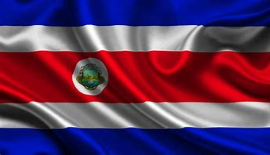

Bandera
La bandera de Costa Rica tiene franjas azul, blanca y roja, simbolizando el cielo, la paz, y la sangre derramada por la libertad.
La bandera de Costa Rica tiene franjas azul, blanca y roja, simbolizando el cielo, la paz, y la sangre derramada por la libertad.
El escudo de Costa Rica incluye volcanes, océanos y un barco, representando la geografía y prosperidad del país.
Costa Rica obtuvo su independencia en 1821 y es conocida por su enfoque en la paz y la sostenibilidad ambiental.
Costa Rica tiene una extensión territorial de aproximadamente 51,100 km².
Ubicado en la costa pacífica, es famoso por sus playas y diversidad de flora y fauna.
El Volcán Arenal es uno de los más famosos de Costa Rica y es ideal para el ecoturismo.
Monteverde es una reserva de bosque nuboso conocida por su biodiversidad.